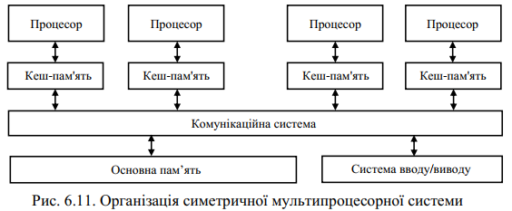

SMP та MPP-архітектури
SMP архітектура

SMP - це багатопроцесорна архітектура, особливістю якої є наявність загальної для всіх процесорів пам’яті.
«Симетрична» означає, що всі процесори можуть виконувати однакові функції.
- Характеристики:
- Два і більше процессорів
- Процесори сумісно використовують основну пам’ять та існують в єдиному віртуальному та фізичному адресному просторі
- Усі процесори розділяють доступ до пристроїв введення-виведення
MPP архітектура
- Характерні особливості:
- Фізично розподілена пам’ять (кожен процесор знаходиться в окремому адресному просторі)
- Наявність центрального управляючого пристрою